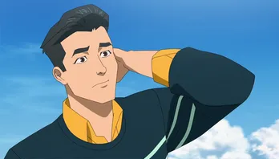
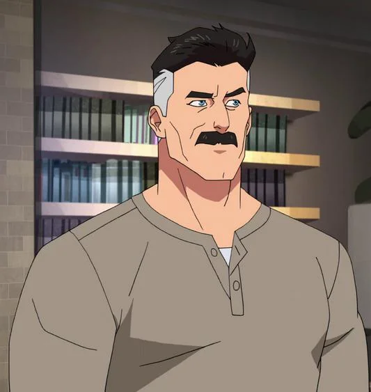

Mark Grayson (Invencible)
Es el hijo de Nolan Grayson, alias Omni-Man, uno de los protectores más poderosos de la Tierra. Su padre pertenece a una raza alienígena superpoderosa conocida como los Viltrumitas, siendo su madre una humana.

Nolan Grayson
Alias Omni-Man, es un miembro de la raza alienígena Viltrumita y el padre de Mark Grayson. Es un aliado del primer equipo de los Guardianes del Globo.
Debbie Grayson (Madre de Mark)
Guardianes del globo
- War Woman
- Green Ghost
- Martian Man
- Josef / Red Rush
- Darkwing
- Immortal